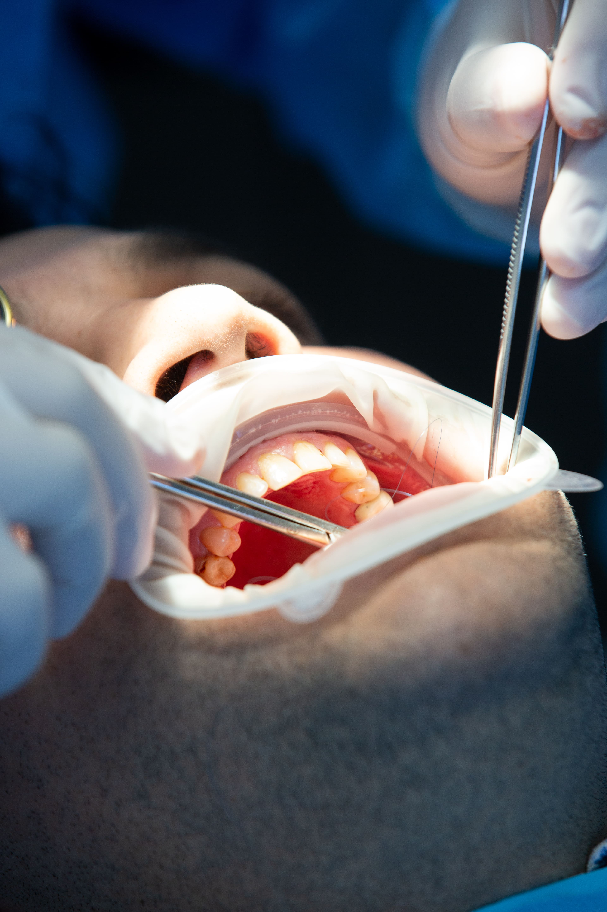

La endodoncia es un tratamiento dental que se realiza para salvar un diente cuando la pulpa (el nervio interno) está inflamada o infectada. Consiste en limpiar y desinfectar los conductos internos del diente, retirar el tejido dañado y sellarlo para evitar futuras infecciones. Este procedimiento elimina el dolor, detiene el avance del daño y permite conservar el diente de forma funcional y saludable.
La endodoncia ofrece múltiples beneficios, entre ellos eliminar el dolor causado por infecciones internas, conservar el diente natural sin necesidad de extracción y prevenir que la infección se extienda a otras áreas. Además, permite recuperar la función normal al masticar, mantiene la estética de la sonrisa y brinda resultados seguros y duraderos, ayudando a preservar la salud bucal a largo plazo.
